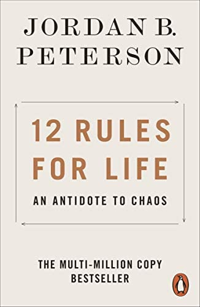

12 Rules For Life is philosophical book that provides young people with some basic rules and groundwork to follow and build their lives upon. It was written by a Canadian professor named Jordan Peterson.
Some of the 12 rules in the book are very simple such as to stand up straight with your shoulders back. Another good but simple one is to tell the truth, or at least dont lie. There are also some rules that are a little unexpected such as to not bother children who are skateboarding and to always pet a cat on the street when you see one.
 About the author